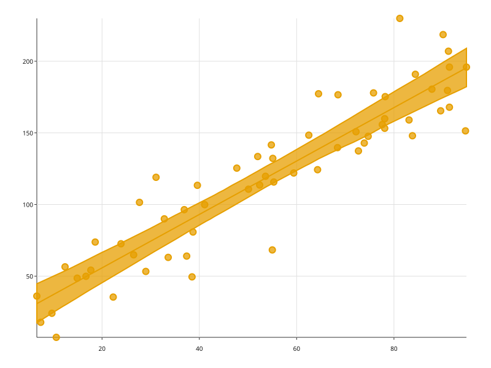
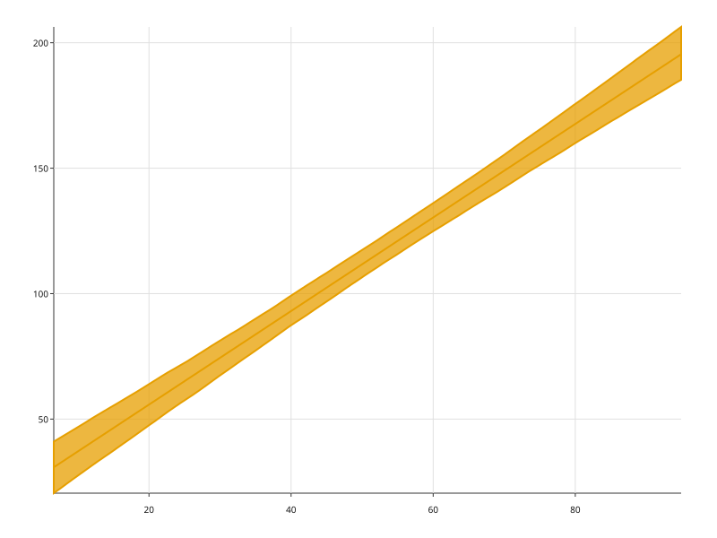

산점도 위에 최소제곱 적합선을 얹고, 부트스트랩으로 잡은 신뢰대역을 함께 그린다.
import random
import svgplot as sp
_rng = random.Random(17)
_ad = [round(_rng.uniform(5, 95), 1) for _ in range(60)]
SPEND = {
"광고비": _ad,
"문의수": [round(18 + 1.9 * value + _rng.gauss(0, 22), 1) for value in _ad],
}sp.regplot(SPEND, x="광고비", y="문의수")sp.regplot(SPEND, x="광고비", y="문의수", ci=None)
sp.regplot(SPEND, x="광고비", y="문의수", ci=0.99)
sp.regplot(SPEND, x="광고비", y="문의수", scatter=False)